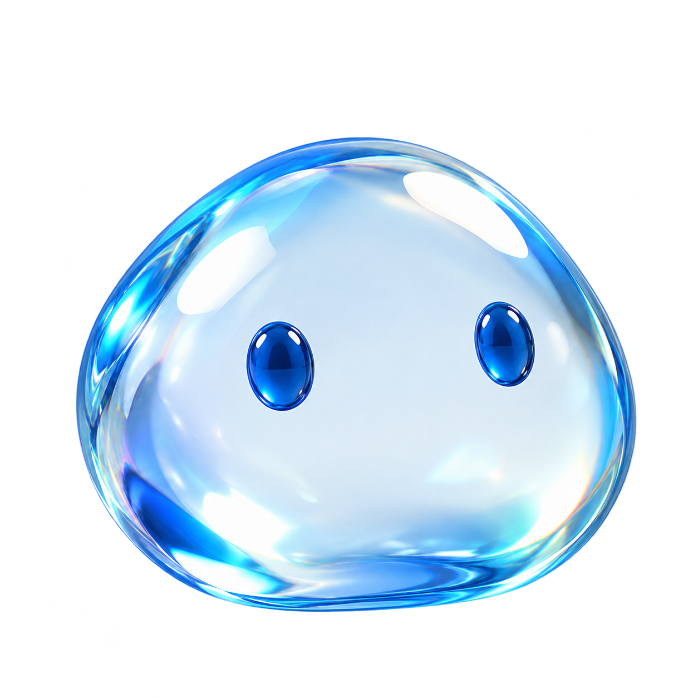

Pull to explore. Drag to move.
Glassy.
Annotate. Screenshot. A little glass.
Draw here. Screenshots need the Chrome extension.
Getting Glassy ready…

Loading…
A few pointers
Quick line → arrow. Hold, then drag → rectangle. Otherwise, sketch. Hover a drawing for its note, color, opacity and delete.
Pull Glassy sideways for modes; up/down for options. Or click to reveal both. Esc returns to browsing. Reload clears your marks.
Glassy.A little transparency goes a long way.
Make your
point.
Start with this detail.
An arrow. A note. That's it.24,860↑ 18.6%
Pick a bar. Make it stand out.
See the flow.
20 seconds. Then it's your turn.
0.2 demo · Store version may differ.